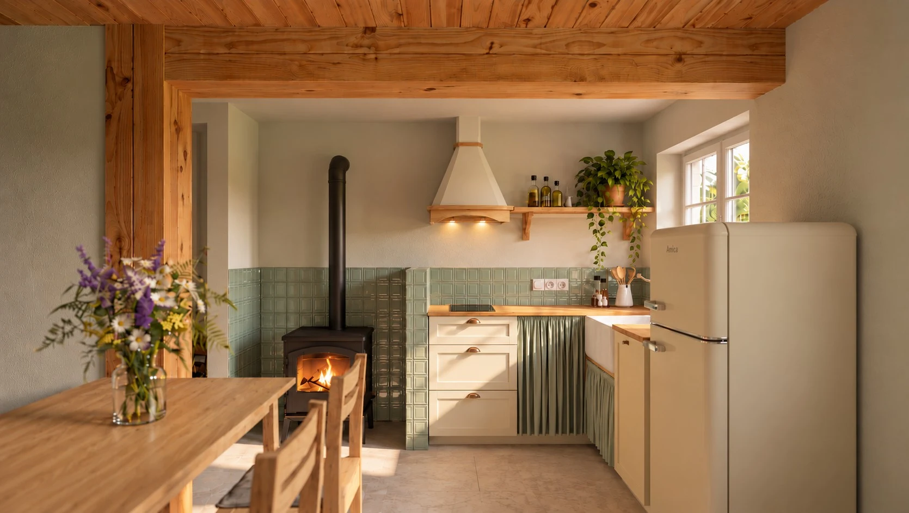

Izabela Świtaj
Izabela ŚwitajPortfolio Izabeli Świtaj

Neomodernizm
Projekt dyplomowy · mieszkanie dla rodziny 2+2

Japandi
Koncepcja wnętrza · mieszkanie bibliofilów

Leśny rytm
Koncepcja wnętrza · salon i home office

Metamorfoza domu z historią
Przytulny domek babci — metamorfoza domu po dziadkach. Realizacja w toku.
O MNIE
Od funkcji do atmosfery wnętrza
Jestem projektantką wnętrz z wykształceniem inżynierskim. W projektowaniu łączę analityczne podejście do przestrzeni z wrażliwością na kolor, materiały i detale.
Szczególną uwagę poświęcam układom funkcjonalnym, ergonomii i rozwiązaniom dopasowanym do potrzeb użytkowników. Lubię szukać pomysłów, które nie tylko dobrze wyglądają, ale mają również praktyczne uzasadnienie.
W swojej pracy wykorzystuję pCon.planner, AutoCAD, SketchUp i V‑Ray. Rozwijam umiejętności w zakresie projektowania koncepcyjnego, wizualizacji oraz dokumentacji technicznej.